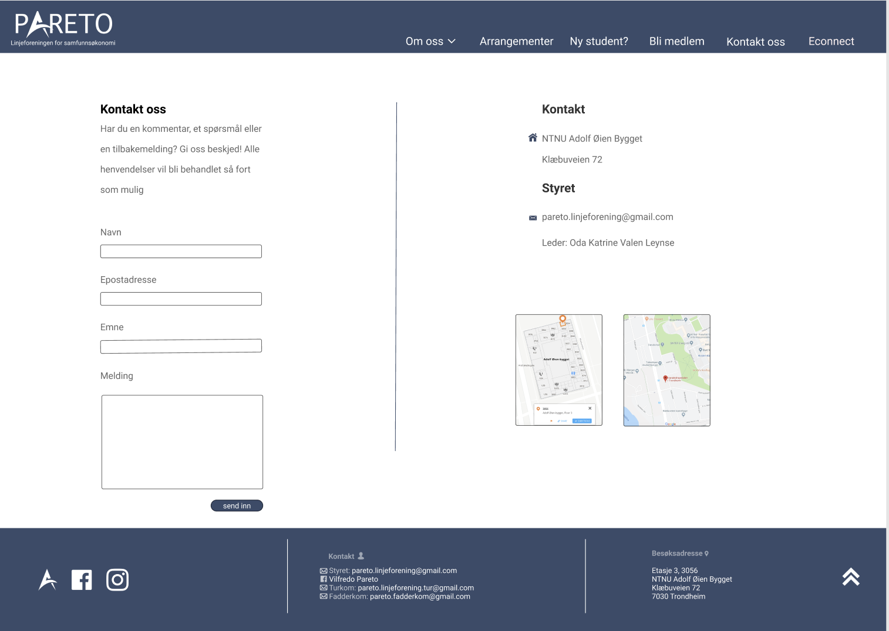

P2 Design Guidelines
Bjørn Are, Frida, Hilde, Ingrid, Kristine
7. oktober 2019
Administrative details
- Vår klient: Linjeforeningen Pareto
- Kontaktperson: Oda Katrine Valen Leynse, leder av Pareto
Purpose, goals and audience
Hensikten med nettsiden er å spre informasjon om Pareto og deres tilbud.
Målet er å ha en felles plattform der medlemmer, og potensielle nye medlemmer, av Pareto kan finne
informasjon om studentorganisasjonen, undergrupper, kommende arrangementer, og ha muligheten til å
stille spørsmål.
Brukerne av nettsiden vil hovedsakelig være studenter som tilhører linjeforeningen.
Utover dette kan aktuelle brukere være bedrifter som er interessert i å inngå samarbeid med dem,
eller andre studenter som er interessert i å finne ut mer om linjeforeningen og hva de driver med.
Navigation Structure
Navigasjonsstrukturen på siden til Pareto Linjeforening vil være en såkalt "clique", som er illustrert i figuren under. Det vil altså si at man skal ha mulighet til å komme seg til alle sidene fra alle sidene. Altså hvis man er inne på "Kontakt Oss" vil det være mulig å komme seg til for eksempel "Ny Student?", eller hvilken som helst annen side uten å gå via noen andre sider. Dette gjøres ved hjelp av top-baren/menyen som vil være tilgjengelig øverst på alle sidene.
Grunnen til at vi har gjort det slik, er fordi klienten ønsker at det skal være en enkel side å bruke, og det skal ikke være noe problem å finne frem til det man leter etter. De ønsker at brukerne skal få så mye frihet som mulig når de er inne på nettsiden, og lett kunne manøvrereseg rundt på den. Dette vil gjøre siden oversiktlig for brukerne, og forhåpentlig gi dem en godopplevelse av siden som gjør at de vil besøke den oftere.
Page Layout and Appearance
Da vi planla hvordan det generelle designet på nettsiden skulle se ut, var vi alle enige om at vi ville ha et brukervennlig og minimalistisk design. Siden de fleste som skal inn på nettsiden er studenter, antok vi at de ikke vil ha store utfordringer når det kommer til å manøvrere en nettside, og at de fleste som går inn på siden ville gjøre det for å finne informasjon om noe fort. Derfor prøver vi å ha et design som gjør at informasjon skal være rask og enkel å finne. Vi har derfor valgt å ha en navigasjonsbar på toppen av siden, og en knapp i footeren som automatisk skroller siden til toppen igjen, i tilleg til en logo som vil føre brukeren tilbake til hovedsiden når den blir trykket på, slik at man enkelt kan komme seg til alle sider fra hvor som helst på nettsiden. I tillegg har vi valgt å ha en navigasjonsbar uten så mye nedtrekksmuligheter, slik at det er lett oversiktlig hvor forskjellig informasjon er. Unntaket er under fanen "om oss" hvor vi vil ha en nedrekksmeny med "komiteer" og "vedtekter". Grunnen til at vi valgte å gjøre det sånn var at disse to sidene er sannsynligvis ikke sider folk er inne på så ofte slik at vi følte det ikke ville være nødvendig med en hel fane til det, samtidig som at det er ganske greit å forstå at disse to sidene er inn under informasjon.

- Vi bruker skrifttypen Roboto overalt, evt Arial hvis Roboto ikke fungerer. I Navbaren bruker vi skriftstørrelse 18 på hovedelementene, og 15 på elementene i nedtrekksmenyen. I footeren vil skriften være i størrelsen 12. skriftstørrelsen på resten av sidene vil avhenge av innholdet på siden.
- Vi har valgt en fargepalett som matcher logoen til linjeforeningen. Vi har derfor en navbar og en footer som er i fargen #3A4B69, med all skrift på disse to i helt hvitt (#FFFFFF) eller i hvitt med gjennomsiktighet, slik at det blir en blanding mellom hvitt og blånyansen. Bakgrunnen på siden vil være helt hvit, med all skrift på den i svart (#000000), men med gjennomsiktiget, slik at det blir en mer grånyanse. Nedrekksmenyen er også i #3A4B69, men med gjennomsiktighet slik at den også blir en blanding.
- Alle linkene vi har på nettsiden (Da alle elementene i navbaren og logoen i tillegg til de tre ikonene nederst til venstre i footeren, og pilen til høyre) vil reagere når man hoverer over med musepekeren. For elementene i navbaren vil de få en hvit strek under seg i tillegg til at nedrekksmenyen også vil vises dersom man hoverer over "om oss". De tre ikonene nederst i footeren vil bli delvis gjennomsiktige når man hoverer over dem. For Logoen i navbaren og pilen i footeren vil det ikke skje noe annet enn at musepekeren viser at det er en link. Alt dette er illustrert ved bildet under.

- I footeren har vi først tre ikoner som linker til hhv. hjemmesiden, facebooksiden og instagramprofilen til Pareto. Så har vi informasjon om kontakt, da epostadresser og facebookbruker. Så har vi informasjon om hvor folk kan finne oss. Til slutt har vi en pil som, når man trykker på den, tar brukeren til toppen av siden.
- Logoen vil være helt øvest i navbaren, og er logoen til linjeforeninen. Den vil også som nevnt være en klikkbar link som tar brukeren tilbake til hovedsiden uansett hvor man er.
Content
Nettsiden kommer til å ha ti forskjellige sider, det er da:
-
om_pareto.html
Tydelig overskrift øverst slik at det gjøres klart hvilken side man er på og hva siden handler om. Under dette kommer et avsnitt om hvem Pareto er, hva de gjør og hvorfor de gjør det. Avsnittet inneholder også informasjon om hvordan linjeforeningen er bygget opp. Etter avsnittet kommer et vestrestilt bilde av Paretos hovedleder samt et sitat fra henne til høyre for bildet. Bildet vil være i ca. 140 x 150 px avhengig av hvilket bilde vi får tilsendt. Nederst på siden kommer tre faktabokser som inneholder funfacts om foreningen; hvor mange komiteer de har, hvor mange medlemmer de har og når de ble stiftet. Faktaboksene har hvit bakgrunnsfarge og lys grå (#3A4B69, 50%) heltrukken kant, er størrelse 100 x 100 px og har avrundede hjørner med radius 12.
-
styret.html
Denne siden kommer til å ligge som en underside under "om oss" på meny-linja. Her kan brukere finne informasjon om hvem som sitter i styret, hvilke stillinger de har og hva de driver med. Det kan være nyttig for medlemmer av pareto og ha en oversikt over hvem som sitter i styret og hva de driver med. Samtidig kan det også være nyttig fra andre linjeforeninger, slik at de vet hvem de skal kontakte ved eventuelle samarbeid.
Innholdet på siden skal være midtstilt men venstrestilt i forhold til det. Det vil først være en overskrift "Styret" (h1). Under vil det være et bilde (160px x 160px) av et styremedlem, etterfulgt med en stillingstittel (h2) som er plassert øverst til høyre for bildet. Under denne stillingstittelen vil det være navnet på personen som innehar denne stillingen (h3). Under navnet vil det være et lite avsnitt om hvem personen er og hva personen gjør i styret. Dette vil gjentas med hvert styremedlem under hverandre, slik som på bildet under. Totalt vil det være 7 slike deler.
-
bli_medlem.html
Overskrift i samme stil som på de andre sidene, etterfulgt av en kort tekst om hvorfor du bør bli og hvordan du kan bli medlem. Teksten skal blant annet inkludere hvor mange medlemmer de er per nå og prissystemet for innmelding til Pareto. Under paragrafen vil det på venstre side være et innmeldingsskjema, og på høyre side være en innrammet uordnet liste av medlemsfordeler og betalingsinformasjon. All tekst og innhold som tilhører innmeldingsskjemaet er bundet sammen av en boks med grå bakgrunn for å gjøre det tydelig at dette er én enhet.
Skjemaet spør etter fornavn, etternavn, email og gjentagelse av email. Dersom e-mailene som blir skrevet inn ikke stemmer overens vil det gis beskjed om dette og man skal ikke kunne sende inn skjemaet uten å korrigere det. Innskrivingsboksene har en svak ramme rundt seg og hvit bakgrunn for å vise tydelig til brukeren at dette er et innskrivingsfelt. Under innskrivingsboksene gis det beskjed om at registreringen blir godkjent først når man har betalt.
Til slutt er det en innsendingsknapp. Når du trykker på «send inn» skal det komme opp en beskjed om at informasjonen din ble registrert og at du har fått en mail for å godkjenne mailen du har registrert i tillegg til en påminner om at du må vippse riktig beløp til Pareto. I dette prosjektet vil ikke informasjonen lagres noe sted, men når knappen trykkes skal det pluss på 1 til medlemsnummeret lengre oppe på siden og på «om Pareto». Vippsnummer og QR-kode til Pareto sin vipps vil står under boksen med medlemsfordeler for å gi brukeren rask informasjon om hvor han skal betale til.
-
nystudent.html
Denne siden vil tilfredsstillet målet om å spre nyttig informasjon til alle nye studenter. Av den grunn vil denne siden inneholde informasjon om hva fadderuka er, hva som må fikses løpet av de første dagene og hva som kommer til å skje de første dagene av studiet. Siden kommer til å ligge under fanen "ny student?". Innholdet skal være midtstilt med like stor marg (190px) på både venstre og høyre side. Teksten skal i forhold til dette være venstrestilt med illustrerende bilder på høyre siden. Bildene vil være på 300px x 300px.
Øverst vil det være en overskrift (h1) hvor dets tår "Ny student?". Under vil det være et lite introavsnitt og velkommen avsnit. Under kommer tre underavsnitt med følgende undertittler (h2); "Hva er fadderperioden", "Hva skjer de første dagene" og "hva bør jeg fikse de første dagene".
-
vedtekter.html
Denne siden vil være en av de fire sidene som ligger under "Om Oss" delen. Her vil man kunne finne linjeforeningens vedtekter. Siden vil hjelpe de besøkende med å finne linjeforeningens vedtekter og med det kunne få et innblikk i hva linjeforeningens står for og hvilke mål de har. Det vil kun være tekst på denne siden. Selve innholdet på siden vil være midtstilt i forhold tilnettleservinduet, men tekst (p - skriftstørrelse 15) og overskrift (h1) vil være venstrestilt i forhold til innholdet. Slik det er illustrert på bildet over.
-
komiteer.html
Denne siden vil være en av de tre sidene under "Om Oss" delen. Her vil brukeren finne informasjon om de ulike komiteene til linjeforeningen.Denne siden vil ha en kort beskrivelse av hva de ulike komiteene i linjeforeningen holder på med. Samt et bilde ved siden av som representerer den enkelte komite.
Siden vil inneholde en overskrift (h1) "komiteer" og to underoverskrifter (h2) "turkomiteen" og "arrangementskomiteen" med egne paragrafer (p – skriftstørrelse 17) under med en kort presentasjon av komiteen. All tekst vil være plassert til venstre på siden, mens bildene vil være til høyre vis a vis teksten til sin tilhørende komite.
Bildene vil ha en størrelse som speiler størrelsen på paragrafene om komiteene, dette vil gi ensymmetri på nettsiden. Derfor kan vi ikke ut fra designet her si med sikkerhet akkurat hvor store bildene vil være. Men malen/eksempelet gir en god illustrasjon av hvordan det vil se ut.
-
arrangementer.html
Nedover langs venstresiden er det en liste av kommende arrangementer med førstkommende arrangement øverst. Hvert arrangement vises som en grå (#F4F4F4) avlang boks som inneholder tittel, når arrangementet er, dato for påmelding, hvem arrangementet er for, hvor mange ledige plasser det er, og et bilde som representerer arrangementet. Til venstre for datoene for når hendelsen skjer og når påmeldingen åpner er det to ikoner, henholdsvis en kalender og en stoppeklokke. Dette er for å fortelle brukeren kjapp informasjon gjennom et bilde fremfor mye tekst som kan gjøre siden rotete og tung å lese. Ikonene har størrelse 15 x 15 px.
Når påmeldingen åpner vil teksten «Påmelding er åpen» linkes til Paretos facebook-arrangement hvor man kan melde seg på. Langs venstresiden i hver boks er det en vertikal farget linje som indikerer hvilken kategori arrangementet tilhører. I tillegg til at fargekodingen gir brukeren et kjapt overblikk over arrangementene gir den også farge og liv til siden. Til høyre på siden vil det være en kolonne med forklaring på fargekodingen på arrangementet, prikkregler og en tekst om at du må være medlem for å kunne melde deg på arrangementer.
-
kontakt-oss.html
Denne siden vil ha informasjon om hvordan man kan komme i kontakt med linjeforeningen i tillegg til at den vil ha et skjema med input-felt som brukeren kan sende inn spørsmål, forespørsler eller kommentarer fra. Det vil da vær informasjon om hvor linjeforeningen befinner seg fysisk (da adressen) med både mazemap og google maps, i tillegg til epostadressen til linjeforeningen.
Mye av informasjonen på siden er gitt på andre steder, blant annet i footeren, men vi prøver å lage nettsiden slik at man ikke må lete mye etter informasjon, og at man derfor kan finne informasjon om forskjellige ting på flere steder, for at det skal gå så raskt og enkelt som mulig
Vi har her også valgt å holde oss til et minimalistisk design, slik at alt er oversiktlig og skal virke behagelig for brukeren å lese.

-
econnect.html
Denne siden vil ha informasjon om Econnect. Hva det er, hvordan du finner det, og hvordan du kontakter dem. Øverst på siden, rett under navbaren, vil det være er stort banner hvor det står "Velkommen til Econnect NTNU". Dette bildet er hentet fra nettsiden til Econnect, og vi valgte å ha det med for å prøve å implementere litt av designet til econnect sin nettside inn i vår.
Videre har vi logoen til Econnect, den vil være en klikkbar link som tar deg med til nettsiden deres. Under logoen skal vi ha enda en link til nettsiden, men denne skal være tydeligere at er en link. Grunnen til at vi har to linker så nærme hverandre er at vi ville, igjen, prøve å gjøre siden så enkel å bruke som mulig, slik at du lett kan komme deg dit du skal.
Under det skal vi ha litt informasjon om Econnect, hva de er og hva de gjør osv, i tillegg til informasjon om hvor man finner dem. Til slutt har vi også et bilde av Econnect, for å få litt mer farge på siden, i tillegg til å gjøre den mer hyggelig og innbydende.

Minimum Requirements
Her kommer et avsnitt.
Plan
Liste med mapper og filer
Nedenfor er listen over alle filene vi skal lage og hvor vi skal lagre dem.
- index.html
- om_oss.html
- komiteer.html
- vedtekter.html
- styret.html
- bli_medlem.html
- arrangementer.html
- ny_student.html
- econnect.html
- kontakt.html
- img/
- pareto_logo.png
- econnect_logo.png
- econnect_banner.png
- forsidebilde.png
- styret.png
- mazemap.png
- googlemaps.png
- a.png
- nystudent1.png
- ...
- styremedlem1.png
- ...
- komite1.png
- ...
- arrangement1.png
- ...
- scripts/
- slideshow.js
- scroll.js
- skjema.js
- meny.js
- style.css
Arbeidsfordeling og frister
I tabellen nedenfor er det angitt hvem som har ansvar for hvilken fil og når filen skal være ferdig. Det ligger også ved en beskrivelse over hva fila skal inneholde/representere.
| Filnavn | Beskrivelse | Ansvarlig | Tidsfrist |
|---|---|---|---|
| index.html | Hovedsiden | Bjørn Are | 26/10/19 |
| om_oss.html | Hvem linjeforeningen er og hva de gjør | Ingrid | 26/10/19 |
| styret.html | Hvem som er i styret og hva de gjør | Kristine | 26/10/19 |
| komiteer.html | Informasjon om de ulike komiteene | Frida | 26/10/19 |
| vedtekter.html | Vedtektene til linjeforeningen | Frida | 26/10/19 |
| bli_medlem.html | Informasjon om medlemskap, samt et bli-medlem skjema | Ingrid | 26/10/19 |
| arrangementer.html | Informasjon om arrangementer som blir arrangert | Ingrid | 26/10/19 |
| ny_student.html | Informasjon til kommende studenter om hva som skjer og hva de bør fikse de første dagene | Kristine | 26/10/19 |
| econnect.html | Informasjon om fagutvalget | Hilde | 26/10/19 |
| kontakt.html | Kontaktskjema | Hilde | 26/10/19 |
| style.css | CSS fil som inneholder all styling til websiden | Alle | 30/10/19 |
| slideshow.js | Bilde-slideshow til forsiden | Kristine | 03/11/19 |
| scroll.js | Funksjon som scroller deg til toppen av siden | Frida | 03/11/19 |
| skjema.js | Input- og skjemavalidering | Bjørn Are og Ingrid | 03/11/19 |
| meny.js | Dropdown-meny | Hilde | 03/11/19 |
| Siste kontroll | Dobbelsjekke hver fil for feil | Alle | 04/11/19 |